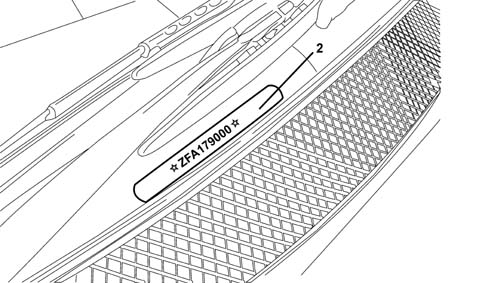

CHASSIS MARKING
- Path
- Technical Data > VEHICLE INTRODUCTION > IDENTIFICATION PLATES > CHASSIS MARKING
- Kind
- technical data / specifications
- Applies to
- all engines; all production periods
- Interactive page
- https://sloeber94.github.io/elrnDB-fUlss/en/#/179021620
Applies to: all engines; all production periods
The chassis marking is located in the centre at the base of the windscreen
